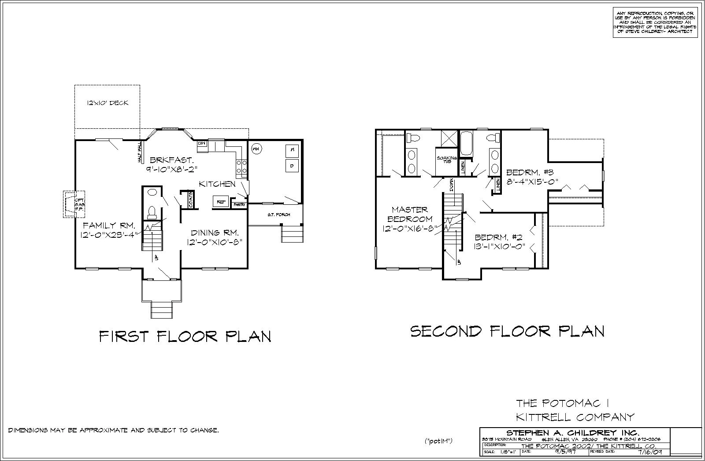

<div class="container project-view">
    
	<div class="row">
        <div class="col-md-8 project-images">
            
            
        </div>
        <div class="col-md-4">
            <div class="project-info">
                <h2>Potomac I</h2>

                <div class="details">

                    <div class="info-text">
                        <span class="title">Sq. Ft.</span>
                        <span class="val">1,904</span>
                    </div>

                    <div class="info-text">
                        <span class="title">Sq. Ft (3rd).</span>
                        <span class="val">384</span>
                    </div>

                    <div class="info-text">
                        <span class="title">View PDF*</span>
                        <span class="val"><a href="pdf/plans/6-Potomac/Potomac-1-2.pdf" target="blank">Floor 1 and 2 (pdf)</a></span>
                    </div>
										
										<span class="disclaimer">* Opens in new window</span> 
                </div>

                <p>The Potomac offers 3 bedrooms with 2.5 baths, this plan packs all you need into its square footage. It has a great 1st floor mud/ utility room and good size bedrooms on the 2nd floor. It come with a walk up 3rd floor that can be used for a finished area or unfinished storage   </p>
              

	 								<p><a href="https://get.adobe.com/reader/" target="adobe"></a></p>     
                        
            </div>
        </div>
    </div>
</div>
